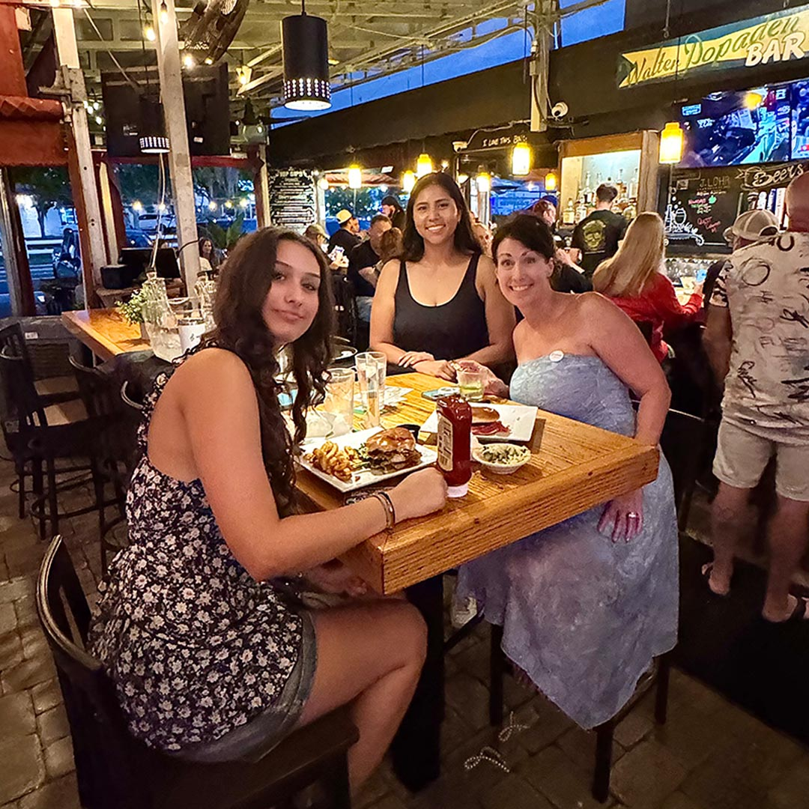

Philippe Park & the waterfront
One of Pinellas County’s best bayfront parks — walking trails, picnic areas, and Tocobaga history overlooking Old Tampa Bay. A perfect morning before lunch on Main Street.
915 Main Street · Safety Harbor
Downtown Safety Harbor — steps from the marina, Philippe Park, and the resort spa district.
Whistle Stop Grill & Bar sits in the heart of walkable downtown Safety Harbor — the small-town Tampa Bay waterfront destination locals call the jewel of the bay. Whether you are planning patio dining after the spa, live music on a Friday night, or a family lunch near Philippe Park, we are easy to find on Main Street.
Whistle Stop Grill & Bar
915 Main Street
Safety Harbor, FL 34695
(727) 726-1956
admin@whistlestopgrill.com
Sunday – Thursday: 11 AM – 9 PM
Friday – Saturday: 11 AM – 10 PM
On-site parking is available at the restaurant. On busy nights — especially during Safety Harbor’s 3rd Friday street festival or downtown events — city lots and street parking along Main Street fill quickly. Our dog-friendly covered patio has fans; most seating is open-air under the oaks, a Gulf Coast favorite for locals and Tampa Bay visitors alike.
Safety Harbor is a short drive from Clearwater, Tampa, and St. Petersburg in Pinellas County. Search “Whistle Stop Grill Safety Harbor” in Google Maps or use the directions button below — we are on the same walkable Main Street corridor as the marina, waterfront park, and Safety Harbor Resort & Spa.
Downtown Safety Harbor is built for strolling — bayfront views, local shops, live music, and one of the most active restaurant scenes on Florida’s Gulf Coast. Plan an afternoon, stay for dinner, and catch the sunset on Main Street.
One of Pinellas County’s best bayfront parks — walking trails, picnic areas, and Tocobaga history overlooking Old Tampa Bay. A perfect morning before lunch on Main Street.
The historic waterfront resort is a short walk from our patio — ideal for spa-day guests looking for restaurants near Safety Harbor Resort & Spa with open-air dining and a full bar.
Stroll the marina, browse boutiques and galleries, and explore the walkable downtown Safety Harbor dining scene — coffee shops, wine bars, and independent restaurants on every block.

On the third Friday of most months, downtown hosts a free street festival with live music, vendors, and late-night dining. Whistle Stop is right on the route — grab a patio seat and enjoy the crowd.
For three decades we have been Safety Harbor’s go-to for real Florida food, cold drinks, and live local music on the patio. Tourists discover us after Philippe Park or the spa; regulars come for fried green tomatoes, Gulf grouper, happy hour, and Tuesday open mic.

Whether you are searching for the best restaurant in Safety Harbor FL, a dog-friendly patio near Tampa Bay, or a laid-back spot after downtown shopping — Whistle Stop Grill & Bar is where the neighborhood gathers. Walk in, call ahead for larger parties, or start with our menus online.